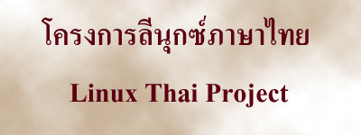
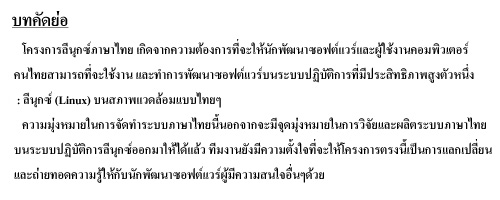

[updated Jan 19, 1998]
,
IP Masquerade,
Netscape Communicator 4.04 & Calendar,
Using IRC on Linux,
[updated Jan 19, 1998].
[updated Jan 19, 1998].
[updated Jan 19, 1998]
,
IP Masquerade,
Netscape Communicator 4.04 & Calendar,
Using IRC on Linux,
[updated Jan 19, 1998].
[updated Jan 19, 1998].


Abstract
We develop Linux Thai project to make Thai software developer and user can
use and develop application on the most efficience operating system : Linux,
under Thai's style environment.
Another object of the project except developing and researching is to make
the project being a knowledge exchange and transfer to another software
developer who is interested in the project.
Notice
We are sorry for non-Thai web cruiser; most information except this page is
provided in Thai language, for now. But if you're really interested in
the project please contact us
for the details. Sorry and Thank you.
Using Thai on Internet Web page, we have one common problem, browsers can not adjust text correctly, due to they use space between word in specifying each word. But in Thai language we write in adjacent word and have little space, space identify block of sentence instead of word. But now, you can use your browser to adjust Thai web pages correctly.
All web pages under Thai Linux Document have this new features; we used cttex to help Web browser in display Thai web pages. From now you can sizable your browser, and then the text will automatically adjust (like in normal English web page), no matter your browser can support Thai or not! Read about cttex at NECTEC website.
This features, we used to prepare in the next project, A Thai searchable Linux website information.
[updated Jan 19, 1998]
,
IP Masquerade,
Netscape Communicator 4.04 & Calendar,
Using IRC on Linux,
[updated Jan 19, 1998].
[updated Jan 19, 1998].
From here you can select below topics:
Linux Thai Project, the topic will present you scope, specification, development status, staff members and other interesting information.
Thai Linux Document , information about Linux, the most popular free Unix clone.Do you wonder why people like Linux? Why would you have to run Linux? The topic include history, How to spell Linux in Thai, Linux commands, System management, Software development, How to setup Thai on Linux, Networking and so on. We will try to translate documents from Linux Documentation Project and providing here. Please join and if you want to boost Linux society in Thailand, help us to translate the documents please.
Linux Tips , we have many interesting Linux tips provide here, also wait for your useful tips.
Frequently Ask Question, Have some question about Linux? Take a look at this page, maybe it can help you to solve your problem.
Linux Website Listing, Follow the link to other Linux website, to find more information.
Questionnaire , please fill in questionnare form, write in what you want me to do for you.
Guest book , please sign on my guest book.
| LinkExchange Member | Free Home Pages at GeoCities |

This document was created on Linux machine, all web pages used software on Linux to create them. The tools are vi, Xpaint, Xview, and Netscape (Linux version).
HTML developed by Kaiwal Development Team (kaiwal@geocities.com)